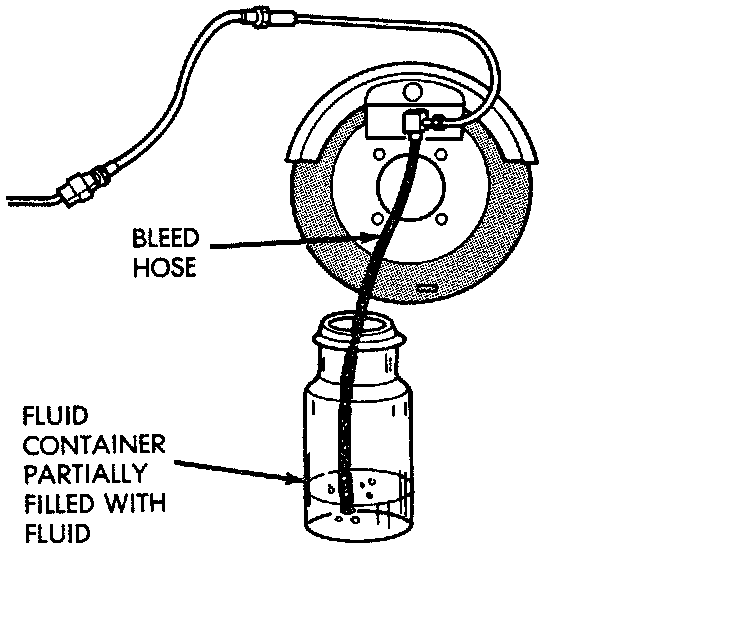

Base Brake System Bleeding
GENERAL INFORMATIONUse Mopar brake fluid, or an equivalent quality fluid meeting SAE J1703-F and DOT 3 standards only. Use fresh, clean fluid from. a sealed container at all times. Do not pump the brake pedal at any time while bleeding. Air in the system will be compressed into small bubbles that are distributed throughout the hydraulic system. This will make additional bleeding operations necessary. Do not allow the master cylinder to run out of fluid during bleed operations. An empty cylinder will allow additional air to be drawn into the system. Check the cylinder fluid level frequently and add fluid as needed. The Brakes should be bled in sequence. First the right rear wheel then the left rear wheel. Then move to the front brakes and bleed the right front wheel then the left front wheel.
PROCEDURE
1. Remove reservoir filler caps and fill reservoir with Mopar, or equivalent quality DOT 3 brake fluid.
2. If calipers, or wheel cylinders were overhauled, open all caliper and wheel cylinder bleed screws. Then close each bleed screw as fluid starts to drip from it. Top off master cylinder reservoir once more before proceeding.
Brake System Bleeding:

3. Attach one end of bleed hose to bleed screw and insert opposite end in glass container partially filled with brake fluid. Be sure end of bleed hose is immersed in fluid.
4. Open up bleeder, then have a helper press down the brake pedal. Once the pedal is down close the bleeder. Repeat bleeding until fluid stream is clear and free of bubbles. Then move to the next wheel.